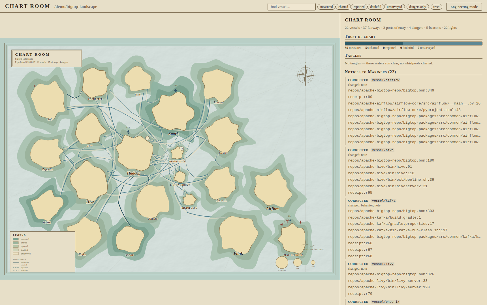
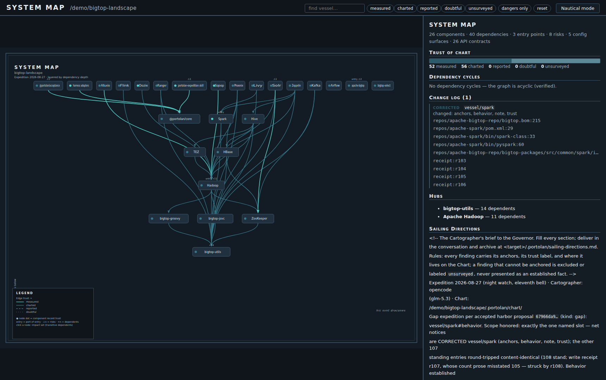
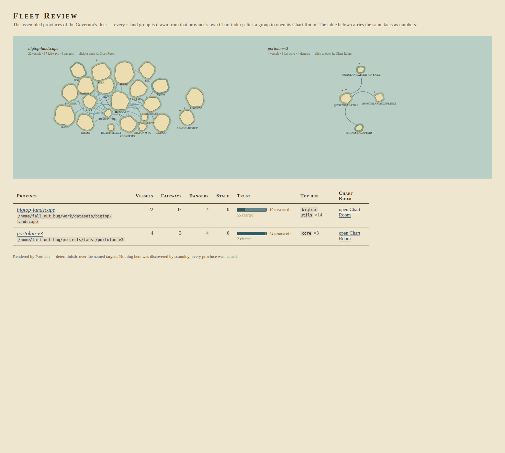
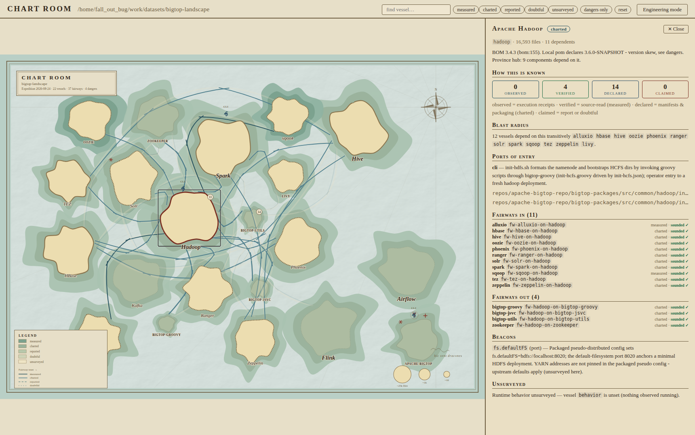

The atlas
One self-contained HTML file per province: opens from a file:// share, no server, no install. Below: the real Apache Bigtop landscape (18 repos).




The trust ladder
Portolan never pretends a guess is knowledge. Every entry carries exactly one label:
| Label | Means | In the atlas |
|---|---|---|
measured | taken from the source, line-anchored; soundings confirmed | deepest water, solid lanes |
charted | declared by manifests, BOMs, packaging | mid band |
reported | a claim from docs or reports | pale band |
doubtful | evidence present, could not be validated | faint dashed lane |
unsurveyed | not determined; left blank on purpose | blank water, no ink |
Staleness is rendered too: sources changed since the last survey ⇒ the island wears a pending correction hatch until an expedition heals it. Hovering an island raises its atlas plate: counters, behavior truth, newest notice, derived role, everything from embedded bytes only.
What ships
MCP survey tools
Twelve stdio tools your agent calls:
sweeps, symbols, manifests, soundings (sound.edge/sound.anchor),
the Chart store, the Harbor queue. Deterministic where it must be.
Harbor & night watch
A deterministic proposal queue (repairs, gaps, new land), plus a bounded night watch that launches repairs through any external launcher. No daemon, ever.
Byproduct exports
The Chart Room and Fleet Review are generated on demand, byte-deterministic, zero dependencies. Exports, never the storage.
Skill = method
The Cartographer's whole expedition method is a loadable skill: five passes, assert→sound→write, honest unsurveyed waters, Sailing Directions to close.
Local-first, read-only
Writes stay under the target's
.portolan/; the target's source is never touched. Network access and
installation sit behind one explicit per-session approval.
Sea-tried
An acceptance gate runs the whole loop against the real Apache Bigtop corpus and refuses stand-ins; the Governor's own verdict read stays the final word.
Demo province: apache-bigtop
An 18-repo Apache stack assembled by gradle+BOM, surveyed by one headless expedition fleet and now wearing its hover plates and honesty ledgers.
Open this province's Chart Room ▸ …and the two-province fleet sheet ▸
| Province facts | Bigtop master repo + 19 BOM components + 2 retired vessels · 108 chart entries · hubs: bigtop-utils ×14, hadoop ×11 · 8 dangers: version skew, undeclared solr↔zookeeper, retired vessels, copy-paste recipes |
|---|---|
| Expedition fleet | 30+ headless expeditions (opencode + glm-5.3) took the province from 0 to 26/26 vessels with observed behavior and from 3 to 26 charted API lights; measured-trust facts grew from 19 to 52. Every write receipted in the ship's log. |
| Honest zeros | What no expedition observed is still labeled
unsurveyed — the lamps say so, in red, on every island. |
| Self-healing proof | Night watch launched real repair expeditions (history:
by: night-watch); a live clobber incident (2-entry partial write) exposed a
store gap — fixed as a shrink guard; the chart was restored from byproduct snapshots. |
Quickstart
# survey a target with your agent (one phrase, it installs Portolan itself):
survey <target> with Portolan
# render one province's atlas — map + graph, find & filters, hover plates:
bun core/src/chartroom/cli.ts render --target /path/to/province
# assemble several provinces into one fleet sheet:
bun core/src/chartroom/cli.ts review --target /prov/a --target /prov/b
# the harbor, headless:
bun core/src/harbor/cli.ts propose --target <t> --format chat # the queue
bun core/src/harbor/cli.ts run --target <t> --fingerprint <fp> \
--launcher adapters/opencode/expedition-launcher # launch one by hand
bun core/src/harbor/cli.ts watch --target <t> [same flags] # the bounded night policy
# serve the twelve MCP tools to your harness:
bun core/src/server/main.ts --target /path/to/province
Requirements: Bun, ripgrep, universal-ctags.
Full contract: docs/MANIFEST.md ·
specs live in openspec/specs/ (validated), history in
openspec/changes/archive/.